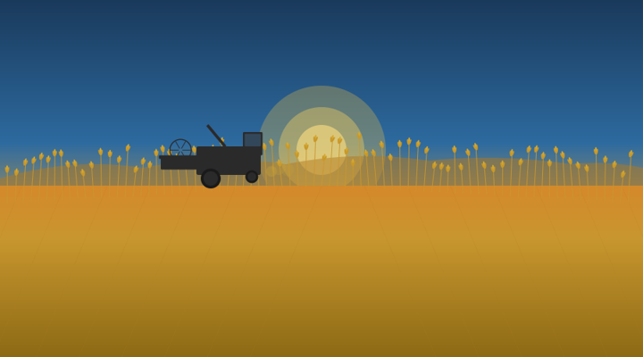

9 Nutrient management
Soil Fertility, Fertilizer Strategies, and Post-Harvest Evaluation

Introduction
Crop productivity can be limited by many factors including water, weeds, pests, diseases, pH, and nutrient deficiency. In the western US, crop productivity is primarily limited by the availability of water. With wet, cold winters and dry, hot summers the productivity of a crop is largely dictated by the plant available water during the growing season. If stored water for diversion is available such as reservoirs and groundwater then timely irrigation can overcome water limitations. The ability of a soil to retain water (i.e. soil water holding capacity) between infrequent rainfall events, which can be impacted by soil management practices, such as tillage and soil amendments, is also a critical factor limiting crop productivity.
After water and climate limitations are considered, one of the next challenges is identifying potential nutrient limitations to the plant. Nutrient availability is largely controlled by soil physical, chemical, and biological attributes. Deficient nutrients can be identified and supplemented to a field through direct fertilizer application; however, to maximize efficiency, minimize environmental pollutants and support long-term soil health, best management practices recommend precision applications to minimize excess fertilizer in agricultural soils.
Forms of Nitrogen and Plant Available Nutrients
Generally, the total nutrient content in soils far exceeds that which is required to grow a plant. However, the majority of the nutrients are often in a form not directly consumable by a plant. Nutrients exist in two general chemical forms: organic (bound to carbon atoms) and inorganic (generally not bound to carbon atoms). Nutrients in an organic form, such as those within crop residue and soil organic matter, cannot be directly consumed by a plant and require decomposition and mineralization processes to transform nutrients into inorganic, plant-available forms, such as ammonium (NH4+) or nitrate (NO3-).
This decomposition process is driven by microbial activity, and the rate at which it occurs depends on temperature, moisture, the amount and composition of organic material, the diversity and abundance of the microbial population and other environmental conditions. Not all inorganic forms of nutrients are available either. The inorganic mineral particles of soil contain micronutrients that only become available to plants through weathering either by water or can also be accelerated through root exudates1. Positively charged inorganic forms of nutrients can also strongly bind to negatively charged soil minerals, particularly clay particles, or other negatively charged molecules bound to soils which make these nutrients unavailable to plants. Many of the plant-available nutrients can also be transported and transformed by water and air, and therefore the amount of nutrients available to a plant can change throughout a cropping year.
Nutrient Management Planning and Assessment
Understanding the factors driving the changes in the amount of plant-available nutrients throughout the year is critical for developing an efficient nutrient management plan for a farm that minimizes the risk of nutrient stress, optimizes profitability as well as long term sustainability. A nutrient management plan should not be limited to soil sampling or other methods to estimate available nutrients at planting and fertilizer application to meet potential plant needs but should also be considered within the context of crop rotations and other cultural practices that impact long-term soil health properties, such as increasing organic matter, microbial populations, soil water retention, and remediation of soil acidification. The nutrient management plan should focus on meeting crop needs and minimizing excessive applications, which can negatively impact the environment and overall profitability. Nutrient management plans should include an evaluation of nutrient uptake efficiencies and explore methods to improve efficiencies through the 4Rs strategy (Right Source, Right Rate, Right Time, and Right Place). Nutrient management plans should also be adaptive and respond to changes in soil health, biology and organic nutrient pools.
Basics of Fertilizer Guides and Nutrient Rate Studies
Crop specific soil fertility guides have been created specifically for growing wheat in both irrigated and non-irrigated regions of Idaho. The University of Idaho has created fertility guides for North Idaho Soft White Winter Wheat, North Idaho Spring Wheat (which provides recommendations for soft white and hard red spring wheat), Irrigated Winter Wheat, and Irrigated Soft White Spring Wheat. Additional regional wheat-based fertility guides are available for eastern Washington through Washington State University and eastern Oregon through Oregon State University which provides valuable fertility information particularly for drier regions which incorporate summer fallow prior to seeding winter wheat.
These fertility guides are based on fertilizer rate experiments in replicated plot trials using conventional cropping and tillage practices at the time of the studies. Many of these guides were originally developed decades ago using varieties that aren’t widely used today, and typically plot trials investigated the impact of a particular nutrient by varying the application rate of only one critical nutrient (e.g. nitrogen) while ensuring that all remaining essential plant nutrients were not limiting plant growth. The optimal fertilizer rate would be based on the point at which additional added nutrient did not make any significant impact on crop yield.
Inherent to each plot trial is some quantity of nutrient loss that is influenced by local soil and environmental conditions and climatic factors. For nitrogen, major loss pathways include leaching, volatilization (off-gassing) or immobilization (both temporary to semi-permanent). Nutrient loss is also influenced by the type of fertilizer, the timing of applications, precipitation or irrigation rates, and soil type. In the decades since these trials were conducted, soil conditions, farm equipment, crop varieties/plant breeding, and fertilizer products have advanced to improve efficiency. Additionally, in many parts of the state, producers now apply nitrogen stabilizers and inhibitors to minimize over winter losses of nitrate.
Fertilizer recommendations may be provided in a fertility guide as a fixed minimum threshold based on a soil nutrient concentration (ppm) or mass (lb/ac) before yield is impaired based on pre-plant soil sampling (e.g., phosphorus) or can be related to the potential crop yield goal (e.g., nitrogen) where the amount of nutrient recommended to be available in the soil increases with the crop yield goal expected by a producer. Specifically for nitrogen, the wheat-based soil fertility guides provide a recommended unit nitrogen requirement (UNR) in lb N per bushel, which estimates the overall nitrogen supply required to meet a specific crop yield goal.
Sap Testing
There is growing interest in the wheat industry in the use of plant sap testing, which involves taking old and new plant leaf samples from representative plants during the growing season and sending them to labs that can extract the sap in the stems and assess the concentration of many nutrients. Specific labs then provide an interpretation of deficiencies across a wide range of nutrients which then can be applied as an in-season foliar spray.
Currently there are a limited number of labs that can analyze sap samples, and no university-based recommendations for sap testing exist. Producers should use caution when relying on in-season foliar sprays, as there is a risk the applied nutrients will not be taken up by plants but rather remain isolated on near-surface soils or crop leaves, particularly in dryland wheat crops. Sap testing and foliar sprays are an active area of research in the region.
Types and Forms of Fertilizer
One key aspect of a nutrient management plan is the selection of the type of fertilizer. Nutrients can be applied to a field through organic sources, synthetic inorganic sources or a combination of both. Where affordable and available, organic nutrient sources (e.g., manure, compost, worm castings) can be applied to meet nutrient deficiencies while also providing micronutrients and carbon additions that can stimulate microbial activity.
Organic Sources
The nutrient content in some organic sources (i.e., composts) can vary; testing these products is recommended to accurately assess the total nutrients applied to the field. It is important to know the contents of both organic and inorganic forms of nutrients – particularly N and P. The carbon to nitrogen ratio (C:N) is another important factor to consider. An organic amendment with a C:N ratio greater than 30:1 may reduce available N (through immobilization processes), whereas a C:N ratio less than 20:1 will result in a net release of N, and more rapid conversion to plant-available forms.
University research has produced general recommendations as to the percentage of the total nitrogen in applied organic sources that should be expected to become available to a plant. The percentage of the total nitrogen in fresh beef-derived manure, stockpiled dairy manure, dairy cow separated solids, and composted beef manure that may be generally considered to become available during the first year of application is 22.5%, 15%, 2.5%, and 5%, respectively.
Long-term, repeated annual application of manure can also lead to increased organic nitrogen carryover. When applying straight manure or compost, it is recommended to test soil regularly to monitor the accumulation of salts and phosphorus and avoid excessive concentrations, which can pose problems to soil health and water quality that are challenging to remediate.
PNW 533 - Fertilizing with Manure and Other Organic Amendments
Andy Bary, Craig Cogger, and Dan Sullivan, 2016.
- Are you thinking about using manure to fertilize your farm but want more information? Properly managed manure applications recycle nutrients to crops, improve soil quality, and protect water quality. From deciding whether manure is right for your farm to learning how to calibrate manure applications, this publication takes you through the process of fertilizing with manure and other organic amendments.
PNW 673 - Sampling Dairy Manure and Compost for Nutrient Analysis
Amber Moore, Mario de Haro-Marti, and Lide Chen, 2014.
- Testing the nutrient content of dairy manure or compost reveals nutrient value and determines the application rate, but it must be done correctly. This six-page guide shows you how to conduct a proper test, from obtaining a representative sample (summarized in a handy two-page, illustrated section), selecting a reliable testing laboratory, determining which lab analyses are needed (including total nitrogen, nitrate nitrogen, ammonium nitrogen, total phosphorus, total potassium and solids) to estimating nutrient availability and calculating all the results.
Synthetic fertilizers
There are many options for producers opting to apply synthetic fertilizers ranging from pressured gas, liquids, and solids. In each case the proportion of a specific nutrient per unit mass or volume can vary greatly. Depending on the fertilizer source, the nitrogen can be provided in various proportions of ammonia and nitrate. Ammonia-based fertilizers have a positive charge and therefore have the added benefit of binding to soil as ammonium, which minimizes transport by water. Depending on soil moisture, temperature and pH, soil microbes convert ammonium to nitrate which is a readily available form for uptake by plants, but also susceptible to leaching. Through this nitrification process, hydrogen ions are released resulting in a decrease in soil pH. In wet, high pH soils, ammonium is susceptible to loss through volatilization3, a process referred to as ammonification.
Anhydrous ammonia is a commonly-used fertilizer applied to fields 1-2 inches below the seed. It is often the cheapest and most concentrated nitrogen source, composed of 82% nitrogen as ammonia. Urea is another common fertilizer that can be applied as a dry solid or in liquid fertilizer blends and is composed of 46% nitrogen. Urea is highly volatile and can lead to considerable ammonia losses if dry fertilizer is not incorporated in the soil soon after application, particularly under warm, moist soil conditions. Two common liquid-based fertilizers are Aqua-ammonia (20% ammonia-nitrogen) and UAN-32 (32% total nitrogen, composed of 25% ammonia, 25% nitrate, 50% urea forms). An additional dry fertilizer source that provides both nitrogen and sulfur is ammonium-sulfate, which is composed of 21% ammonium nitrogen and 24% sulfur.
Improving Nutrient Use Efficiency
Fertilizer costs are one of the largest annual expenses to a producer and excess applications of synthetic and organic fertilizers can have negative consequences on soil health and the environment. Annual monitoring and evaluation is recommended to improve nutrient use efficiency at the farm and field level, to improve profitability and to reduce potential environmental degradation.
Several technological advances exist that can improve fertilizer application efficiency and better target appropriate application rates. In many large production farms, reducing the area of a field that receives overlapping fertilizer through the acquisition of GPS-guided autosteer and section or nozzle control can help avoid over-application and pay off through reduced fertilizer costs and improved yields within a few years.
For example, a 6-inch reduction in the overlap between adjacent passes with a sprayer or drill with a 40 ft applicator is a 1.3% (0.5 ft / 40ft = 0.013 or 1.3%) reduction in required fertilizer costs. For big farms with several applications of fertilizer, this 1.3% reduction in purchased fertilizer could make purchasing autosteer and GPS-guided systems pay off within two years. In diverse fields where expected crop yield varies dramatically, variable rate fertilizer application strategies based on two or more management zones that delineate differences in expected crop yield due to variability in soil type can make a farm more profitable through reduced fertilizer costs.
The greatest cost savings often occur when producers drop fertilizer rates on the poorest ground within the field, particularly if the yield varies by more than 10% across a single managed field. Crop yield monitors can be used to monitor crop variability and can then be used to create multiple management zones to distinguish regions of unique crop response.
Several cultural practices can also help improve nutrient use efficiency. Producers may consider building soil organic matter, water, and nutrient holding capacity through compost or biochar or other high-carbon amendments in areas of fields that consistently underperform. Timing fertilizer applications to better align with growth stages that require more nutrients can also minimize losses and reduce overall application rates. However, efficient and effective timing of fertilizer application is dependent on many factors. In southern Idaho irrigated crops, research has shown that split applications at planting and jointing do not improve yield, or may even reduce yield, in hard and soft white spring wheat and spring barley. In well-drained soils, applying irrigation more efficiently to avoid over-application of water can reduce nitrate leaching and could potentially reduce the required amount of nitrogen fertilizer.
Management Strategies for Long-term Sustainability
Long-term goals of sustainable nutrient management include building the soil’s capacity to retain and cycle nutrients, incorporate the use of organic forms of nutrients, and improve overall nutrient use efficiency of crop production systems. Increasing the diversity of crop rotations, incorporating intercropping and cover cropping with or without grazing are strategies that can supply and cycle organic nutrients, with potential to improve soil structure, soil water retention, reduce weed and disease pressure, improve crop yield and can promote larger and diverse populations of above and below ground beneficial insects and microorganisms.
As soil health improves and microbial activity increases, there is greater potential for microbial mineralization processes to increase available nutrient supply particularly at times when crop nutrient demands are high. Producers should be able to see increases in soil organic matter, increase in soil structure as manifested in increased aggregate stability, a softening of the soil and gradual reduction in density of hard pans, an increase in infiltration and reduction in surface runoff, and a potential deepening of the maximum rooting depth.
One easy monitoring approach to document potential changes in nutrient cycling is to analyze post-harvest soil samples for inorganic N, particularly in highly productive years, to determine the amount of residual nitrogen in the soil. If a large amount of inorganic nitrogen remains in the soil after harvest in a highly productive year, the nutrient mineralization processes are likely larger than expected, or losses were less than expected, indicating an opportunity to cut back synthetic fertilizer rates in future years.
Using crop rotations and crop residue retention (i.e., non-harvested plant components) to cycle and store nutrients is another important and common cultural practice for maintaining long-term soil health and soil nutrient supply. Decomposition of crop residue provides carbon and other plant essential nutrients, supporting soil organism populations and the release of nutrients to future crops. A common strategy is to grow legumes before high N requirement crops, such as winter wheat, to supply nitrogen through fixation with symbiotic microorganisms, but also through the retention of high N crop residues. Another important factor to monitor is the amount of nutrients cycling through crops to differentiate between nutrients that are removed at harvest versus what is retained in the field as crop residue, and can be estimated using common grain quality metrics (see nitrogen harvest index in section 9.6 below). These values, in combination with post-harvest soil N measurements and applied fertilizer rate information provide an easy indication of nitrogen use efficiency at the end of each season that can be used for monitoring and improving nutrient management practices over time.
Including variable nitrogen fertilizer rate strips in fields is another important strategy to determine optimal nitrogen fertilizer rates appropriate for local soil and climate conditions. Ideally, a crop yield monitor would allow for quick analysis of yield differences in each strip. If crop yield monitors are not available, freely availably satellite imagery can be used to evaluate relative differences within a field. In this case, producers should ensure fertilizer strips are at least twice as wide as the spatial resolution (i.e., pixel size) being detected by satellite imagery (see more detail below).
Fertility Guide Structure
The basic structure of all wheat-based fertility guides for the western US is largely consistent. In nearly all guides the total recommended supply of nitrogen (Nₛ) that a grower should ensure is available to a plant during a growing season is directly related to expected crop yield. The recommended amount of nitrogen fertilizer (Nfert) is calculated by estimating the deficit of inorganic nitrogen that will be in the soil after major sources and sinks of N are estimated and accounted for, as shown in the equation below:
\[ N_{fert} = N_s − N_{s,pre} − N_{min} ± N_{res} \]
The major sources and sinks of N include the amount of inorganic nitrogen already in the soil at planting (Ns,pre), the inorganic N that will likely become available through N mineralization of soil organic matter (Nmin) over the growing season, and the nitrogen that may become available or be consumed through the breakdown of a plant residue from a previous crop (Nres).
Nitrogen Supply (Ns)
The nitrogen supply recommendation is based on fertility trials designed to identify the optimal fertilizer rate which maximizes crop yield. In nearly every fertility guide the amount of nitrogen supply (lb) required to produce a single bushel of wheat is referred to as the unit nitrogen requirement (UNR). It is important to point out that Ns includes not only the amount of nitrogen that will directly be consumed by the plant to achieve the desired crop yield but also implicitly includes an estimate of the amount of nitrogen losses that typically occur in a conventional farming system including nitrogen leaching, volatilization, and denitrification – this is considered the nitrogen uptake efficiency rate.
Table 9.1
Nitrogen Soil Test (Ns,pre)
All fertility guides recommend soil sampling to assess the amount of inorganic N (nitrate or ammonium) in the soil prior to planting. Soils should be sampled at least two weeks prior to anticipated soil application to ensure the soil analysis labs can return test results before fertilization. Soils should be sampled in 1 ft increments down to an effective rooting depth.
In general, it is recommended for the deeper soils in the high precipitation zones of Eastern Washington, Eastern Oregon and North Idaho that soils are sampled down to 3 to 4 ft whereas in the more arid soils of Southern Idaho soil sampling only needs to occur in the top 2 ft. Lab analysis results are often provided in concentration units of parts per million (ppm) by mass (i.e. mg/kg). To convert from ppm units to pounds per acre per foot requires an assumption of the bulk density of the soil. In general for fine dryland soils in North Idaho, Eastern Washington, and Eastern Oregon multiply by a factor of 3.5 whereas use 4 for the more coarse soils in southern Idaho.
Table 9.2
Nitrogen Mineralization (Nmin)
The nitrogen which becomes available during the growing season through the breakdown of organic forms of nitrogen to inorganic plant available nitrogen is called nitrogen mineralization (Nmin). Nitrogen mineralization is greatest in warm, moist soils (68 – 86°F, 80-100% of field capacity soil moisture) and generally increases with greater soil organic matter. Soils with abundant and diverse microbial communities and a large supply of low carbon/high nitrogen soil organic matter would be capable of generating large amounts of inorganic N through mineralization processes. In arid soils with little organic matter Nmin may be insignificant.
Nitrogen mineralization can range from as little as 10 to over 100 lb N/ac, and while it can be a substantial contributor to N supply, only rough estimates are available and actual rates are difficult to predict. It is currently recommended that in the intermediate to high precipitation zones of North Idaho, Eastern Washington and Eastern Oregon that producers assume 20 lbs of N will become available to the crop for every 1 percent organic matter in the soil in fields managed following a conventional till system. This drops to 17 lbs N for every 1 percent organic matter in fields managed following a no-till system.
Table 9.3
Nitrogen from Previous Crop Residue (Nres)
Most fertility guides recommend producers specifically account for the nitrogen that becomes available through the breakdown of any previous crop residue having a low C/N ratio (e.g. legume crop residue) left on the field, or the additional amount of nitrogen that will be needed to compensate for crop residue with a high C/N ratio (e.g. cereal grains) during decomposition processes by soil microbes. Fertility guides provide estimated quantities of N that may become available (i.e. N credit) to either winter or spring wheat, or some provide estimates for specific types of legumes (Table 9.4).
Table 9.4
Table 9.5
Calculator - rates / dates / yield goals
Northern Idaho - N fertility; Macro-nutrients; Micro-nutrients
Resources:
Northern Idaho Fertilizer Guide: Winter Wheat
Phosphorus Fertilization of Late-Planted Winter Wheat in No-Till Fallow
Northern Idaho Fertilizer Guide: Soft White Spring Wheat
Northern Idaho Fertilizer Guide: Spring Wheat
Dryland Winter Wheat: Eastern Washington Nutrient Management Guide
Southern Idaho irrigated - N fertility; Macro-nutrients; Micro-nutrients
section text
Resources:
Optimum Nitrogen Rates for Wheat Depend on the Environmental and Field-Specific Conditions Southern Idaho Fertilizer Guide: Irrigated Winter Wheat
Southern Idaho Fertilizer Guide: Irrigated Spring Wheat
Southern Idaho dryland - N fertility; Macro-nutrients; Micro-nutrients
section text
Resources:
Idaho Fertilizer Guide - Dryland Wheat Production in SE Idaho and N. Utah
PNW fertilizer guides - wheat classes and cropping systems
section text
Nitrogen and Protein Management Guides:
Hard Red Spring Wheat Nitrogen and Protein Management Guide
Hard Red Winter Wheat Nitrogen and Protein Management Guide
Hard White Spring Wheat Nitrogen and Protein Management Guide
Winter Wheat in Continuous and Summer Fallow Cropping Systems - Fertilizer Guides (low, intermediate, and high precipitation zones)
Winter Wheat and Spring Grains in Continuous Cropping Systems (Low Precipitation Zone)
Winter Wheat in Summer-Fallow Systems (Low Precipitation Zone)
Winter Wheat in Continuous Cropping Systems (High Precipitation Zone)
Winter Wheat in Continuous Cropping Systems (Intermediate Precipitation Zone)
Winter Wheat in Summer-Fallow Systems (Intermediate Precipitation Zone
Cover crops
section text
Estimating Plant-Available Nitrogen Release from Cover Crops
Biosolids
section text
Learn more:
Fertilizing with Biosolids
Liming for acid soils
section text
Learn more: Agricultural Lime and Liming (Parts 1-3)
Acid Soils: How do they Interact with Soil Disease
Impact on end-use quality
section text
Resources:
Irrigation and Nitrogen Fertilization Affect End-Use Quality of Spring Wheat of Three Market Classes